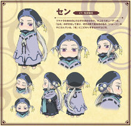

ハクメイ
白明第一次在工匠师傅，鰯所属的工匠公会“石贯会”露面。惊讶于石贯会巨大的设备之时，副会长火天河会长西风出现了。西风连不属于公会的白明的名字也知道。白明拜托这样的会长，说想要修补石墙，但却被西风拒绝了……
一天白明在森林里找水果时，发现了个蛋形的建筑物。在那里一个名为迦达的人出现了。蛋形建筑是个住所，也是个店铺，理发店“翡翠之蛋”。白明虽然稍有怀疑，不过看上去挺有趣便让她剪头发。一进去室内道具很完备，跟理发店一样。白明在意着，为何这个蛋不会倒下来……
御子地总觉得在家的上方偶尔会发出声响，一天还与白明一起发现了上面多了很多门和梯子。为了弄清全貌，她们决定去敲门，而此时在那里出现的是小锹形虫的小春。御子地本打算鼓起干劲警告她，但小春却战战兢兢地道歉道：“我刚来城市不懂规矩……”。御子地就此平息了怒火……